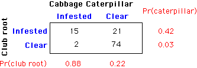

Is a relationship causal?
Investigators usually hope to find causal relationships between the variables that are recorded. If one variable causally affects the other, then adjusting the value of that variable will cause the other to change. For example, if the milk yield of cows is causally affected by a dietary supplement, then yields can be increased by changing this supplement.
Causality can only be determined by reasoning about how the data were collected.
The data values themselves contain no information that can help you to decide.
Lurking variables
Non-causal relationships between two variables usually result from the effect of further variables called lurking variables that are related to the variables under investigation. Causal relationships can only be deduced if it can be reasoned that lurking variables are not present.
Cabbage pests and diseases
A plant researcher is investigating the relationship between different diseases and pests of vegetable plants. The following data come from a sample of 112 vegetable gardens in which cabbages were grown organically. The contingency table shows the gardens that were classified as being infested with cabbage caterpillars and club root (a disease that leads to swollen roots).

A larger proportion of gardens that are clear of club root are also clear of cabbage caterpillars. Similarly, a larger proportion of gardens that are not infested by cabbage caterpillars are also free from club root.
There are three possible interpretations of this relationship between cabbage caterpillars and club root.
The data cannot help to resolve the issue of causation so it would be incorrect to report any causal relationship from these data.